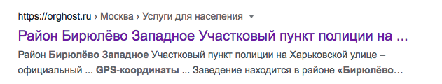

Пять лучших районов для активистов, где вы точно не попадетесь на глаза камере с распознаванием лиц.

В современной Москве угрозой безопасности активистов стало наблюдение с камер наружного наблюдения и других средств видеослежки. По данным ОВД-инфо, только за время протестов в 2021 году более 200 человек были задержаны постфактум благодаря системе распознавания лиц. На данный момент камер, способных идентифицировать человека в Москве, становится с каждым годом все больше. Для многих активистов встает вопрос о том, в каких районах или муниципальных поселениях Москвы они могут чувствовать себя в безопасности и где они с наименьшей вероятностью могут быть вычислены и найдены через обычную уличную камеру или камеру на домофоне. Для того, чтобы уменьшить вероятность попадания в область действия подобных устройств, мы подготовили специальную карту, на которую нанесены практически все камеры уличного слежения. Она позволит уменьшить риск попадания в опасные зоны, а также станет хорошим средством предотвращения неприятных ситуаций, когда активист оказывался под большим количеством камер и таким образом оказывался под ударом
Также мы подготовили список из трёх наиболее безопасных районов с точки зрения слежки по камерам. Представленные территории наименее плотно покрыты инструментами видеослежки (включая дворовые и подъездные камеры), а значит, вероятность “попасться” камере будет минимальной. Акцент сделан на районы, в которых количество камер на квадратный километр является минимальным, но при этом плотность населения позволяет затеряться в толпе, что также позволит избежать преследования более старыми методами.
В целом, все три района отлично подходят для того, чтобы укрыться в них на какое-то время и не быть замеченными со стороны камер, умеющих различать лица. Топ носит рекомендательный характер и не призывает локализоваться именно в тех частях Москвы, которые мы обозначили. Обеспечение собственной личной безопасности по-прежнему остается ответственностью самих активистов, мы лишь предлагаем инструмент для упрощения жизни. При этом размещение районов на разных ступенях “пьедестала” носит условный характер, с точки зрения безопасности в области защиты от слежки они находятся примерно на одном уровне.
Для определения того, какие районы наименее подвержены слежке со стороны камер, мы использовали открытые данные о расположении камер с сайта data.mos.ru. Двумя критериями, на основе которых мы определяли безопасность районов были количество камер наружного слежения на квадратный километр и количество человек на одну камеру. Для нас было важно, чтобы выбранные районы не граничили с крупными жилыми массивами Московской области, так как про Подмосковье у нас нет информации о расположении камер в открытом доступе. Это сделано во избежание ощущения мнимой безопасности, когда пользователи нашей карты могли бы подумать, что на территории района и граничащих с ним жилых комплексов практически отсутствуют камеры, что в действительности не так. Также в выборку не попали районы и муниципальные образования, которые находятся в ТиНАО, так как они находятся довольно далеко от центра города и общественной жизни и которые имеют слишком низкую плотность населения, что может привести к угрозе слежки традиционными методами.

Первый район, который мы обозначим как условно безопасный с точки зрения камер, – район Савёлки Зеленоградского административного округа. Несмотря на то, что сам Зеленоград окружён территорией Московской области, камеры которой не отображаются на карте, мы можем считать его довольно безопасным местом. Он не граничит с крупными жилыми массивами МО, поэтому попадание в “слепую” зону, где возможно оказаться под камерой, практически невозможно. При этом здесь довольно низкое количество камер на квадратный метр и высокая плотность населения относительно тех же устройств слежения. Сам район при этом является довольно зеленым и комфортным для жизни и, несмотря на свою удаленность от остальной Москвы, имеет довольно хорошую транспортную связь с ним.

Вторым районом, который мы также считаем довольно безопасным, является район Силино. Он также находится в Зеленоградском административном округе, про который мы писали выше, и расположен неподалеку от района Савёлки.

Третий район, который также можно рассмотреть с точки зрения относительной безопасности, – Бирюлево-Западное, которое также является окраиной Москвы. Здесь низкое количество камер на квадратный километр, а количество людей на одно устройство слежения гораздо выше, чем в Зеленограде. При этом район обладает большой площадью, что позволяет буквально затеряться в каменных джунглях.
На этом наш топ заканчивается. Мы еще раз напоминаем, что информация, изложенная выше, носит рекомендательный характер и не является конечным средством для решения всех проблем. Также обращаем ваше внимание на то, что карта покрывает территорию всей Москвы, что значительно упростит ваши передвижения по городу и позволит все меньше и меньше попадаться в обзор камер наружного слежения.
P.S.: худшими районами с точки зрения безопасности от слежки с видеокамер по нашему мнению являются следующие районы: Басманный, Мещанский и Теплый стан. Здесь приходится довольно большое количество камер на квадратный километр, а плотность насселения не позволяет затеряться в толпе.